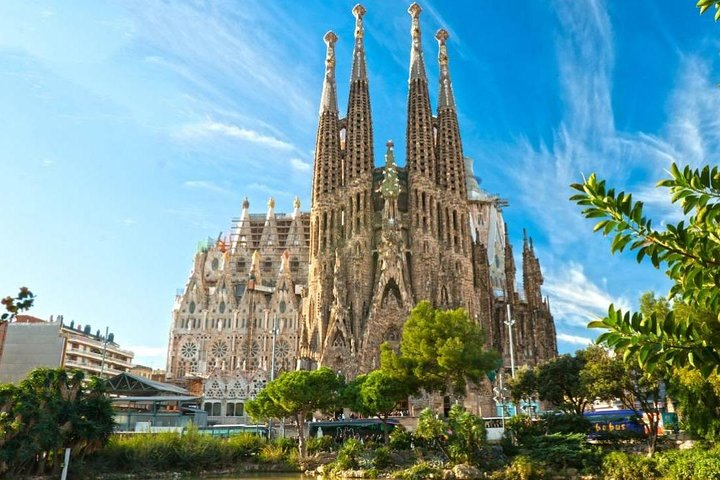
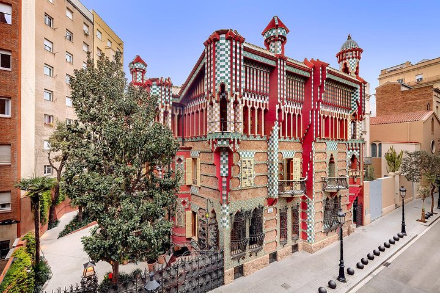
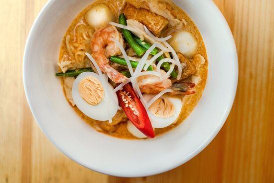
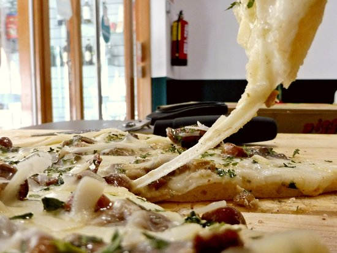

Volver al inicioBarcelona
Barcelona es la capital de Cataluña. Se encuentra situada en el noreste de España, a escasa distancia de Francia y de los Pirineos. La ciudad tiene una población de 1.700.000 habitantes, siendo la ciudad más poblada de España por detrás de Madrid. El área metropolitana de Barcelona está constituida por 36 municipios con una población de más de 5 millones de habitantes. En Barcelona existen dos idiomas oficiales, el castellano y el catalán. Al igual que en toda España y la mayor parte de Europa, la moneda oficial de Barcelona es el Euro (€).
Sitios turísticos
Sagrada Familia
La Sagrada Familia, como uno de los hitos más importantes de Barcelona, atrae a grandes multitudes de visitantes todos los días. Evite esas multitudes y ahorre tiempo con este boleto que incluye la entrada rápida y sin colas. Una vez dentro, podrás explorar la catedral a tu propio ritmo con una audioguía incluida.
Excursión en autobús con paradas libres por la ciudad de Barcelona Ruta de este a oeste

Moverse por los lugares de visita obligada de Barcelona a pie puede ser agotador y lento, especialmente en el calor del verano. Revise las atracciones con facilidad y en menos tiempo con un pase turístico de dos pisos de 1 o 2 días, que incluye comentarios de audio sobre los lugares de interés. Manténgase a bordo para obtener una visión general de la ciudad que ahorra tiempo, o suba y baje en las paradas a lo largo de las dos rutas para explorar más.
Casa Vicens (la primera casa de Gaudí)
Visite esta casa de Antoni Gaudí fuera de lo común en una visita autoguiada de Casa Vicens. Aunque menos visitada que algunas de las otras obras maestras de Gaudí en Barcelona, como la Sagrada Familia y el Parque Güell, recorrer esta casa histórica proporciona una visión más profunda del aclamado arquitecto. Además, a diferencia de las atracciones más concurridas de Gaudí, puede tomar fotos despejadas de la arquitectura única del edificio sin que se interponga una gran cantidad de personas.
Restaurantes
La Trocadero
Fast food 100% vegano. Hamburguesas, repostería vegana, zumos prensados en frío.
Malaysia
Asiática, Malaya, Comida de calle.
¿Con quien te gustaría ir?
Me encantaría a Barcelona con mi amiga Carolina, ella vivió toda su vida en ese lugar, con ella la experiencia sería increíble.Com a Itàlia
Com a Itàlia Como en Italia, así es como nos gusta cocinar. Pizza al corte elaborada con productos italianos, además de otras especialidades como piadinas, arancini, focaccia… Todo ello elaborado diariamente de forma artesanal para que te sientas como en casa.
Historia de Barcelona
Fundación. Los romanos
Los primeros vestigios humanos en la zona datan del 2500 a.C. y la existencia de un primer poblado se sitúa entre el 2000 y el 1500 a.C. Según el poeta latino Rufo Festo Avieno, hacia el siglo IV a.C. en la zona había dos poblados ibéricos: uno en el montículo del Taber, cuyo nombre se desconoce, al que los historiadores han denominado de diferentes formas -Barcilo, Barcinom o Barkeno- y que pudo ser el origen del término Barcelona; y otro en el monte del actual Montjüic, llamado Laye, ocupado por los íberos layetanos.
El Condado de Barcelona
En el 801, una vez arrebatada la ciudad a los musulmanes por Ludovico Pio, hijo y vasallo de Carlomagno, los francos constituyeron el Condado de Barcelona, integrándole en la Marca Hispánica dentro del Imperio Carolingio.
Barcelona en la Corona de Aragón
La unión con el reino de Aragón favoreció la expansión del Condado de Barcelona por toda Cataluña y que Barcelona se convirtiese en el centro político y económico de la nueva Corona de Aragón. Barcelona fue sede de la celebración de las Cortes de la Corona de Aragón repetidas veces.
Barcelona en el siglo XX. El Modernismo
A finales del siglo XIX y principios del XX, Barcelona se convirtió en una de las ciudades donde el movimiento modernista se desarrolló con más fuerza y personalidad. Pintores, diseñadores y arquitectos dejaron en la ciudad una huella imborrable que ha marcado para siempre la idiosincrasia de Barcelona. La ciudad tuvo la suerte de contar entre sus hijos con el genial e inmortal Antoni Gaudí, máximo exponente del modernismo catalán.
Ruta recomendada para viajar a Barcelona
- Día 1: Llegada a Barcelona
- Día 2: Barcelona: el Barrio Gótico y Paseo de Gracia
- Día 3: Barcelona: Las Ramblas y la Sagrada Familia
- Día 4: Barcelona: Park Güell y Camp Nou
- Día 5: Montserrat
- Día 6: Vuelta a casa
Llegada al aeropuerto internacional de Barcelona. Desplazamiento al hotel. Espectáculo de agua, luz y sonido en las Fuentes Mágicas de Montjuic. Cena en el Paralelo. Noche en Barcelona.
Ruta recomendada para visitar por la mañana el Barrio Gótico con la Catedral de Barcelona. A continuación ir al Mercado de la Boquería y comer en uno de sus puestos que os recomendaremos. Pasear por Rambla Catalunya y Paseo de Gracia. Visitar la Casa Batlló y la Pedrera (obras de Gaudí). Por la tarde itinerario recomendado para pasear por el Born visitando el Museo Picasso y la iglesia de Santa María del Mar (la Catedral del Mar). En el Born os recomendaremos un par de Restaurantes auténticos, nada de turistadas!
Por la mañana ruta recomendada por las Ramblas, el Raval y el Port Vell. Restaurante recomendado en la Barceloneta para comer una fantástica paella. Por la tarde visitar el Hospital de San Pau y la Sagrada Familia. Más tarde pasear por el barrio de Gracia y cenar en uno de sus sitios.
Visitar el Park Güell (otra de las grandiosas obras de Gaudí). Visitar el Camp Nou. Pasear por Montjuic y el parque de la Ciutadella. Cena en el Puerto Olímpico. Copa en el mirador del Tibidabo. Noche en Barcelona.
Desplazamiento a Montserrat en tren y subida al monasterio en cremallera o en teleférico. Visita a la Abadía de Montserrat y a la capilla de la Virgen de Montserrat. Excursión por la cima de la montaña de Montserrat con espectaculares vistas del valle y de las peculiares formas de las rocas de esta montaña. Visita a la Cova Santa. Regreso a Barcelona. Noche en Barcelona.
Vuelo de vuelta a casa